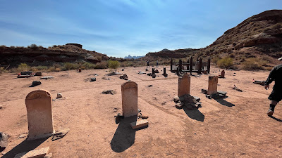
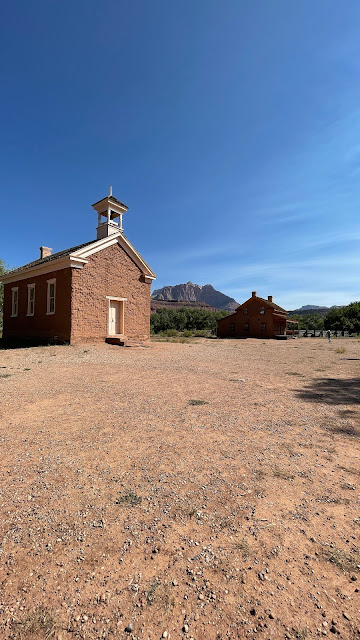
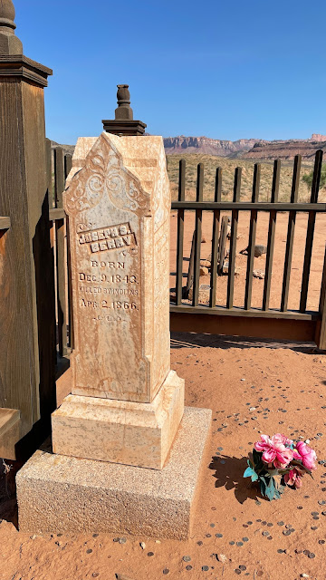

National Park
DECEMBER 12, 2023
2 mins Read
Grafton Ghost Town and Cemetery - Rockville, UT Near Zion National Park

Just outside of Zion National Park in Utah is the Grafton ghost town and historic cemetery in the town of Rockville. Surprisingly, this cemetery has a tombstone that says, "Killed by Indians" on it, which got my attention and made me feel like I went back in time. One of the highlights of this ghost town was walking through the well-preserved historic buildings and seeing how things were still intact and how low the ceilings were in all the structures. It was also a bit scary walking into the dark and creepy basements where I got spooky vibes as if someone was watching me from behind. 😳

In the four years after Grafton's founding in 1862, death came in its usual manner, taking the young, the sick, the old: Mary Lavina Andrus died at one year of age; Mary Jane York, 28, died of tuberculosis, Byron Lee Bybee, 65, died of "poor health." And there were accidents: Joseph C. Field, 9, was dragged to death by a horse.
By when the year 1866 hit, the settlers must have wondered if their Heavenly Father had abandoned them. Thirteen people died in rapid succession, taken by epidemics, a tragic accident and by the friction caused when new folks rub up against old.
Many headstones are missing. It's believed 74 to 84 graves exist. The Grafton Cemetery also includes Southern Paiute people who worked and lived alongside early settlers.
Grafton Historic District
On the National Register of Historic Places
The Berry headstone reminds us of a time when there wasn't enough to go around. When the Utah Territory was settled, the upper Virgin River was already inhabited by native Southern Paiute peoples. Pioneers often settled the same places required by these native people for their subsistence. This competition of land and scarce resources led to conflict.
At the same time, Navajo people living south of the Colorado River were squeezed between pioneer settlement in Arizona to the south and Utah to the north. In December 1865, Navajo raiders stole cattle and horses from Kanab and the Shirts ranch at Paria. In January 1866, two ranchers were killed at Pipe Spring and their cattle stolen. Consequently, the Mormon militia killed Indians near Pipe Spring and in retaliation, the Indians killed the Berrys, who were traveling home to Berryville (now Glendale on Highway 89), near Colorado City. At the time, Grafton was the County Seat, and their bodies were brought here for burial.
During this time, Mormon Church leader Brigham Young ordered villages in southern Utah to coalesce into towns of at least 150 men. Grafton and other Virgin River towns were deserted as townsfolk consolidated in Rockville. Grafton farmers returned daily to tend their hometown fields, and by 1868, Grafton was resettled."
